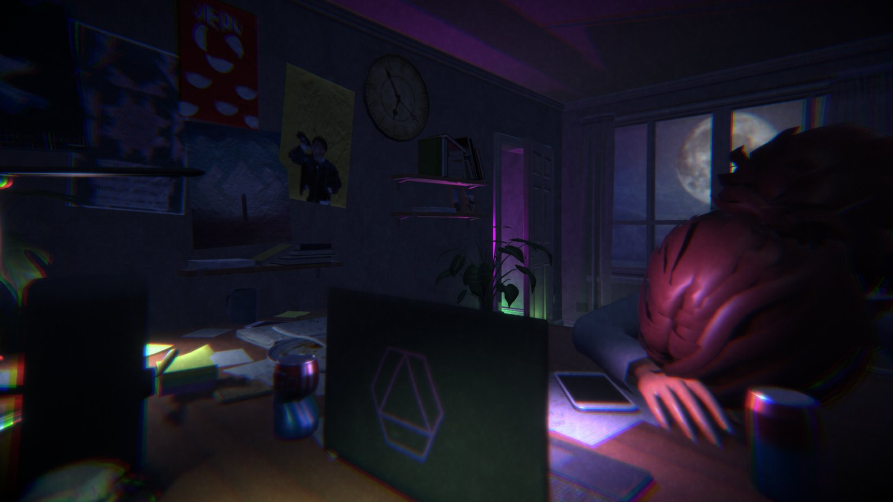
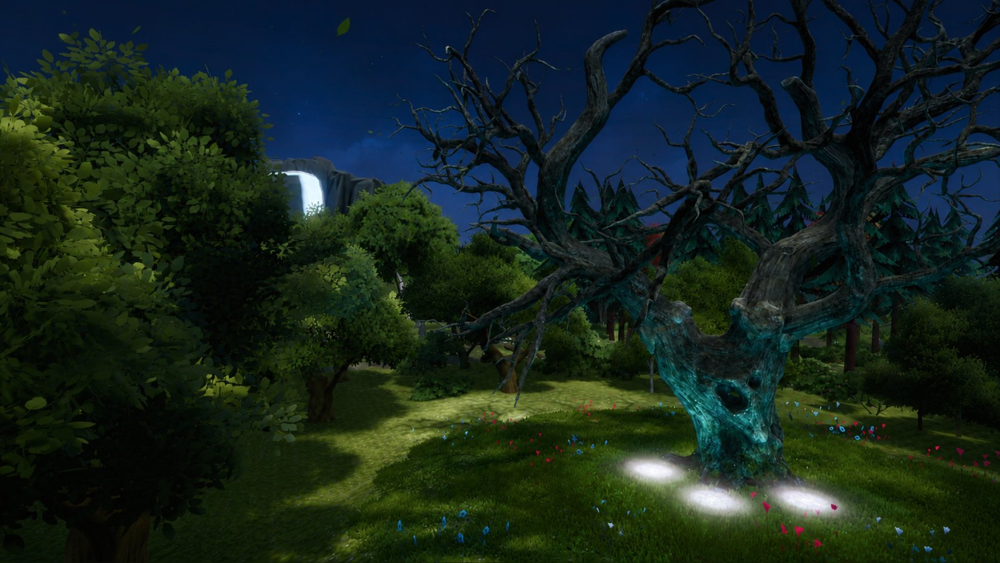
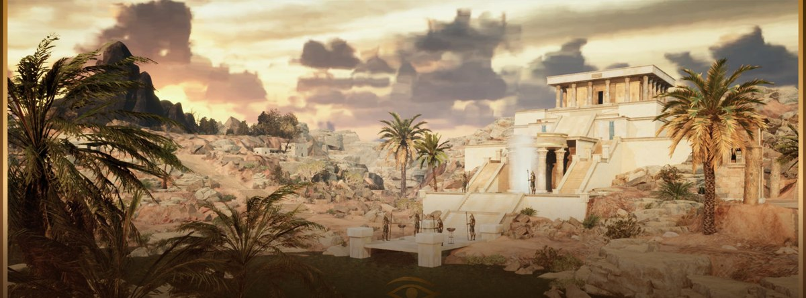
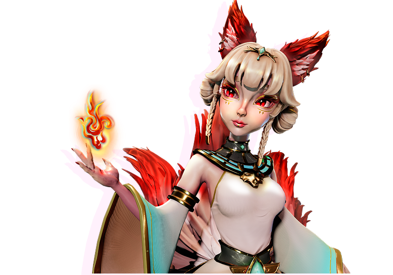

Due to Dream
Awaken the Grove
Sanctuary of the Nile
NefiraI like making things that are fun to look at and even more fun to interact with.
I'm an Applied Mathematics & Statistics student with a Digital Art background, interested in game design, 3D art, and creative technology. Whether it's a strange dream world or a tiny interactive experiment, I enjoy bringing ideas to life.
LET'S CONNECT ↗